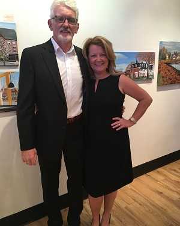
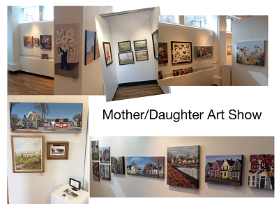
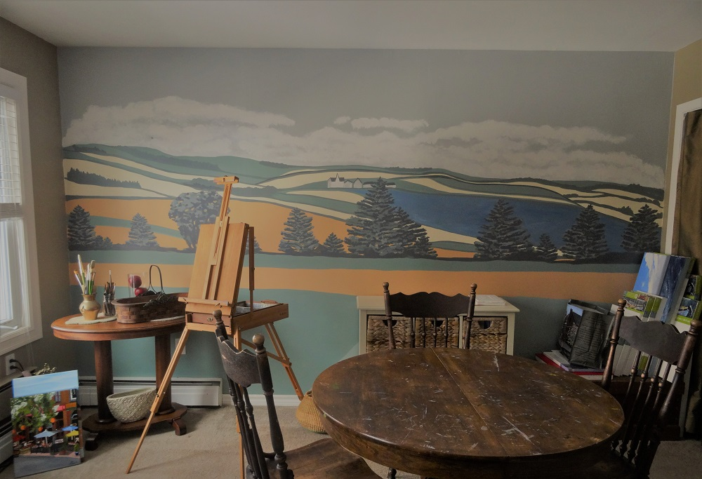
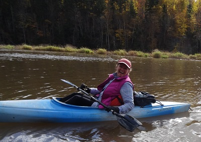

I love to create. I love learning. I love a challenge. I love new things and change. I love people. I love kayaking, hiking, and skiing. I love to sew. I love beautiful things. And I really, really ... love my family!.
 
I've always been pretty crafty but didn't try my hand at painting until later in life. As a young person I started off in business. Right out of school I became an entrepreneur and that has never changed. Over the years I've owned an educational toy store (Whipper Snapper Inc.), a specialty food store (The Uncommon Grocer) and a mystery shopping business (Retail Success Inc.). I also did contract work in the agricultural and culinary fields. Then I began to paint. I loved it so I did what I do best and turned it into a business! I started painting scenes from my home town, Charlottetown, Prince Edward Island. Some of my paintings seemed like they would be so nice on market bags. I looked into it and found a company that could transfer my painted images onto reusable Market Bags. I started going to little markets in the summer and selling my bags to tourists and Islanders. They were a hit! Now I also have this website which I hope will enable me to connect with many more people. I feel very grateful for the paths I've been able to explore. Who knows whats next!
I couldn't resist this big empty wall in my art room. What better to fill this space than a mural. I chose a PEI Landscape in muted colors to match the feeling of the room. If you are interested in painting one of your walls with a mural please Contact Me

Thanks to the wonderfully adventureous Tracy Crosby for helping me with all my photograph needs. Things would be rather dull without her!
